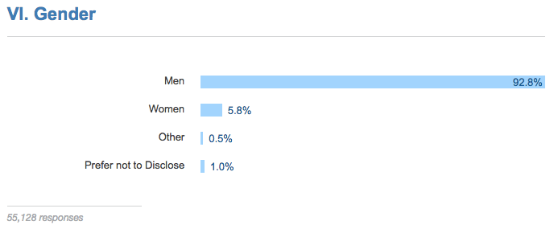
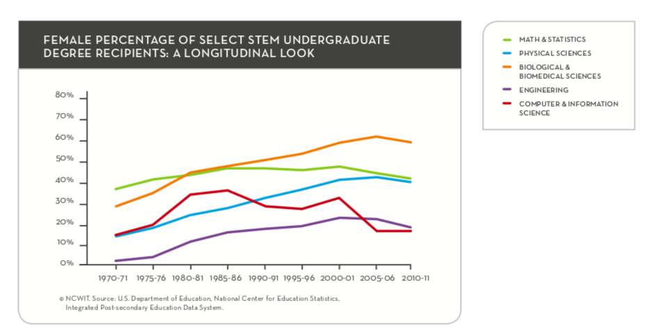
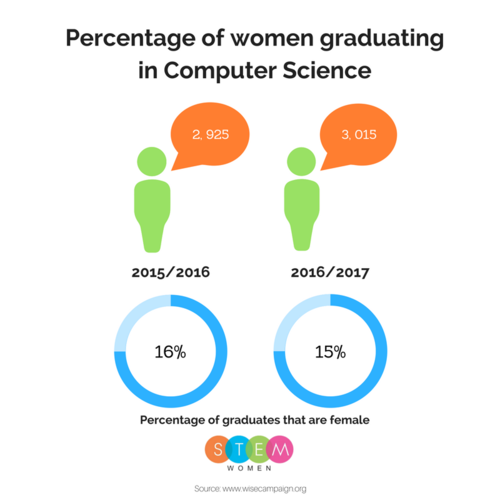

Lets uncover some statistics to analyse the problem
(Source:Stack Overflow, 2016 )
The figure took data from 56,033 coders in 173 countries. Only 5.8% of those code developers, were women, with 92.8% being men.
In the US, only 18% of all computer and information sciences undergraduate degrees are taken by women (Source:US Department of Education, page 16)
Why so few? Click here for an analysis of the data.
The figure below shows an explanation of the number of female percentage of stem undergraduate degree recipients. Specifically, we will examine how the number of females who took computer and information science changed. Between 1970 - 1986, the percentage rose for 15% to 35%, before dropping to 28% by 1996. Then we see a rise again to 33% by 2001, before witnessing a sharp decline by 2006 to 15%. The number of recipients has remained stable at 15% through to 2011. This figure shows that the percentage of women graduating in computer science related degrees has fallen 1% from 2015 to 2017.
